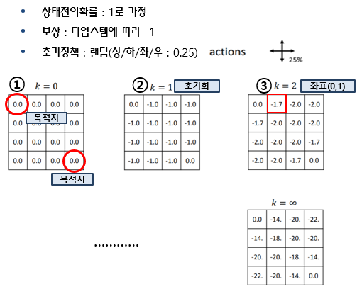
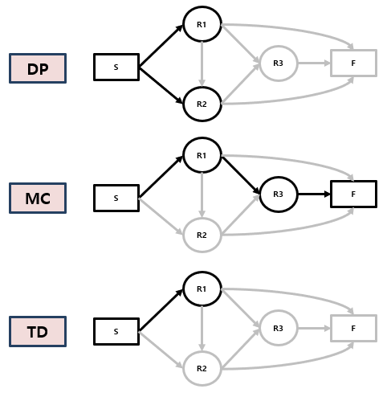

[강화학습 기초 3-2] 다이내믹 프로그래밍, 몬테카를로, TD
환경을 알 때 쓰는 다이내믹 프로그래밍과, 모를 때 쓰는 몬테카를로 · TD를 그리드월드와 수식으로 비교합니다.
강화학습 기초 시리즈 · 12편 중 6번째 글
연재 목차 보기
대표가 쓴 『개발자답게 코드로 익히는 강화학습』(프리렉, 2025)의 내용을 블로그에 맞게 정리해 연재합니다.
지난 편에서 MDP의 목적은 최적 정책을 찾는 것이라고 했습니다. 이번 편에서는 그 방법 세 가지를 봅니다. 환경을 다 알 때 쓰는 다이내믹 프로그래밍, 모를 때 쓰는 몬테카를로와 TD입니다.
다이내믹 프로그래밍: 환경을 다 알 때
다이내믹 프로그래밍(DP)은 큰 문제를 작은 문제로 나눠 풀고, 한 번 구한 답을 다시 씁니다. MDP는 이 방식이 통하는 구조라서, 전이 확률과 보상을 모두 아는 모델 기반 환경이라면 DP로 풀 수 있습니다. 방법은 두 단계를 반복하는 것입니다.
- 정책 평가: 지금 정책을 고정하고, 각 상태의 가치를 "한 칸 앞의 가치"로 계속 갱신합니다. 충분히 반복하면 진짜 가치에 수렴합니다.
- 정책 제어: 계산한 가치를 보고, 가치가 가장 큰 쪽으로 가도록 정책을 탐욕적(greedy)으로 바꿉니다.
그리드월드로 계산해 보기

4×4 칸에서 목적지(왼쪽 위, 오른쪽 아래)까지 가는 게임입니다. 한 번 움직일 때마다 보상 −1을 받고, 처음 정책은 상하좌우를 0.25씩 고르는 무작위 정책입니다. 벽 쪽으로 움직이면 제자리에 머뭅니다.
k = 2일 때 (0, 1) 칸의 가치를 계산해 보면, 왼쪽은 목적지(0), 위는 벽이라 제자리(−1), 오른쪽(−1), 아래(−1)입니다.
이 계산을 모든 칸에 대해 수천 번 반복하면 가치가 더 바뀌지 않는 값에 도달합니다.
| 0 | −14 | −20 | −22 |
| −14 | −18 | −20 | −20 |
| −20 | −20 | −18 | −14 |
| −22 | −20 | −14 | 0 |
이제 정책 제어를 합니다. 예를 들어 −18 칸에서는 위(−14)와 왼쪽(−14)이 가장 크므로, 두 방향에 0.5씩, 나머지에 0을 줍니다. 이렇게 바꾼 정책으로 다시 평가하고 제어하기를 반복하면 최단 경로 정책이 나옵니다.
몬테카를로: 끝까지 해 보고 평균 내기
환경을 모르면(모델 프리) 다음 상태를 미리 계산할 수 없습니다. 그럴 때 쓰는 방법이 몬테카를로(MC)입니다. 정확한 식으로 계산하는 대신, 여러 번 해 보고 그 결과를 평균 내서 값을 추정합니다.
모양이 복잡한 도형의 넓이를 생각해 보세요. 넓이 1m²인 정사각형으로 도형을 감싸고 공 30개를 무작위로 뿌렸더니 15개가 도형 안에 들어갔다면, 도형의 넓이는 약 15/30 × 1 = 0.5m²입니다. 공을 많이 뿌릴수록 정확해집니다.
강화학습에서는 에피소드를 끝까지 실행하고, 지나간 상태마다 받은 반환값 G를 모아 평균을 냅니다. 그래서 MC는 시작과 끝이 있는 환경(에피소드 단위 게임 등)에서만 쓸 수 있습니다.
증분 평균: 과거 기록을 다 저장하지 않는 방법
평균을 낼 때마다 지난 반환값을 모두 저장하면 메모리와 시간이 많이 듭니다. 직전 평균만 있으면 새 값이 들어올 때 평균을 바로 고칠 수 있습니다.
"새 평균 = 이전 평균 + (새 값 − 이전 평균)을 조금 반영"이라는 뜻입니다. 이 모양을 MC에 적용하고, 1/k 대신 고정된 작은 수 α(학습률)를 쓰면 프로그램으로 짜기 쉬운 형태가 됩니다.
Gt와 V(s)가 같아지면 더 이상 바뀌지 않습니다. 실제로 해 본 결과(G)와 예측(V)의 차이를 줄여 가는 것, 이 생각이 앞으로 나올 모든 알고리즘의 바탕입니다.
TD: 한 걸음만 가 보고 바로 고치기
MC의 약점은 에피소드가 끝나야 학습할 수 있다는 것입니다. TD(시간차 학습, Temporal Difference)는 G 대신 "한 걸음 가서 받은 보상 + 다음 상태의 추정 가치"를 씁니다.
TD: V(St) ← V(St) + α ( Rt+1 + γV(St+1) − V(St) )
한 스텝마다 바로 고치므로 학습이 빠르고, 끝이 없는 환경에서도 쓸 수 있습니다.

| 환경 정보 | 한 번에 보는 범위 | 언제 갱신하나 | |
|---|---|---|---|
| DP | 모두 앎 | 다음에 갈 수 있는 모든 상태 | 매 단계 |
| MC | 모름 | 실제로 지나간 경로 하나 (끝까지) | 에피소드가 끝난 뒤 |
| TD | 모름 | 실제로 지나간 경로 한 걸음 | 매 스텝 |
모델 프리에서 정책은 어떻게 고치나
DP는 다음 상태들의 가치를 다 알 수 있으니 가장 좋은 상태로 가는 행동을 고르면 됩니다. 모델 프리에서는 다음 상태를 미리 알 수 없습니다. 대신 지금 상태에서 할 수 있는 행동은 압니다. 그래서 상태가치 V 대신 행동가치 Q(s, a)를 추정하고, Q가 가장 큰 행동을 고르도록 정책을 고칩니다. 다음 편의 살사와 Q러닝이 바로 이 방식입니다.